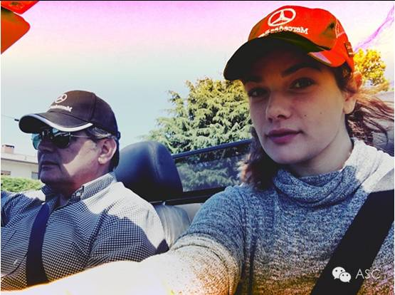
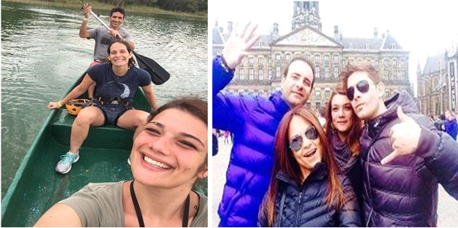
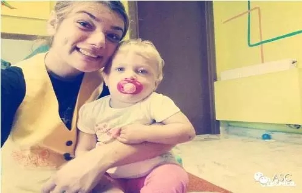
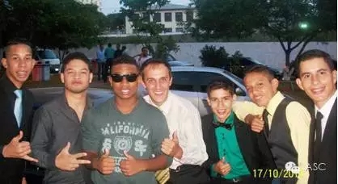
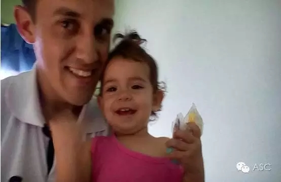
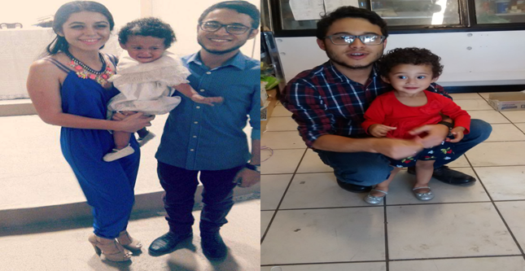
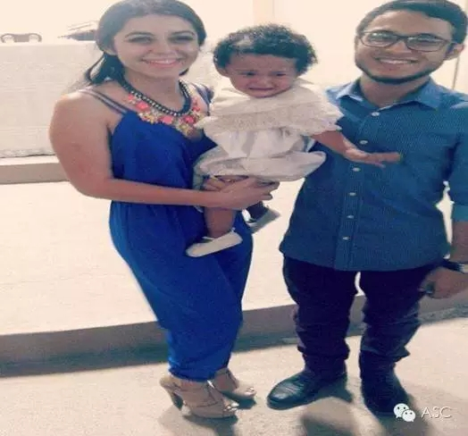

互惠动态
|
|
ASC互惠生今日★星★推荐
互惠生，找ASC

国籍：意大利
年龄：21
教育背景：高中，米歇尔Sanmicheli解决社会健康专业研究所
语言：意大利语，英语水平优秀
开始互惠时间及在华时间：最早来华时间是2016年8月第一周，最晚是2016年8月30；互惠时长半年/一年
兴趣爱好
Giulia Bragantini兴趣爱好广泛，喜欢唱歌、绘画、旅游、语言；热爱运动，普拉提、瑜伽和游泳都是她的强项哦！烹饪、跳舞、艺术、手工艺也很拿手。

一些经历
做过夏令营指导员，照顾所有孩子，准备各种休闲活动；
现在是在超市里当面包师，和同事一起管理面包房。

自我描述
我是一个很积极的人，我想环游世界；我精力充沛，喜欢很多活动，也给自己设定了很多目标。我虽然敏感但是性格坚强，为人有趣。通常情况下我很容易适应新环境，我也比较实际。

国籍：巴西
年龄：26
教育背景：本科，Uninter大学
语言：葡萄牙语，英语水平优秀
开始互惠时间及在华时间：最早来华时间是2016年10月，最晚是2017年10月；互惠时长一年
兴趣爱好
喜欢去剧院、电影院、野营；美式足球和排球、钢琴、跑步、骑行和电子游戏等等。
一些经历
学校秘书：负责学生和学校的文件档案
学校助教：帮助学习有困难的学生
照顾孩子：辅导孩子们的家庭作业，带他们去公园散步，给他们做零食吃。


年龄：21
教育背景：本科，下加利福尼亚州自治大学
语言：西班牙语，英语水平优秀
开始互惠时间及在华时间：最早来华时间是2016年8月；互惠时长一年以上
兴趣爱好
阅读、写作、电子游戏、野营、钓鱼、户外活动
照顾孩子的经验
照顾自己的弟弟和教女，利用图书、音乐和电影，讲一些孩子们感兴趣的话题。角色表演、阅读、唱歌，一周重复一个他们必须要知道和用到的词语。

关于互惠，您了解得够多么？
请外国学生来家庭照顾孩子，辅导孩子外语？
只了解这些是不够的！
获取更多信息请参考以下方式：
联系ASC：
电话：86-21-61116069(上海中心）
86-25-66065662（南京中心）
全国家庭均可申请！
手机：15601666586（可加微信）
Q Q：3259637585
微信：asc-center
邮箱：info@asc-center.com
网站：www.asc-aupair.com

感谢您对我们的关注